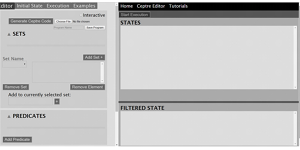

Ceptre Editor is a web-based program for creating prototypes for games in a conceptual level without having to
code more specific details that the person might not be interested in making at the moment.
It was made as a quicker and more direct way of making experimental game mechanics, without having
to delve into a complex and somewhat puzzling chain of languages and tools that are usually needed for other
programs.
The Ceptre Editor allows you to build a world and the elements that exist in said world, as well as manipulate how
these elements will act and interact with each other. This allows users to be able to start creating a base or a
skeleton of a game and see if the mechanics would be possible or what problems arise when trying to make it and,
if possible, correct them.
Logo by: Rook Liu